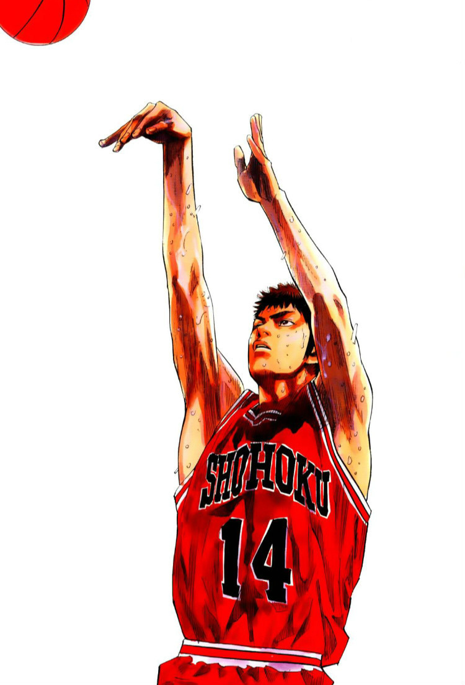
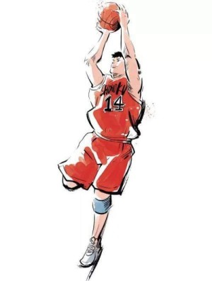
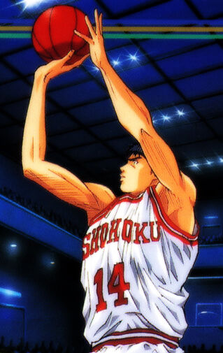

三井寿
三井寿是日本漫画及动画《灌篮高手》中的主要角色，湘北高中篮球队的球员，是经常先发五人之一，在队中的位置是得分后卫，投篮姿势非常标准，擅长三分球，防守能力亦非常高竿，具有强烈的求胜欲望。因绝技连续三分球像火焰般一燃起就势不可挡，而被朋友崛田德男称为“炎之男”。
著名台词
“我是三井寿，是个永不放弃的人！”
容貌特征
- 左下巴旁有一条不甚明显的疤痕。
- 门牙被宫城良田打掉，重返球队后于县大赛出赛前夕植牙补回。
发型改变
- 初中时期：三井寿发型是典型的中间分界头，仍是稚气未脱。
- 脱离球队与不良少年为伍后，发型逐渐留长，发长至肩膀。
-
重返湘北篮球队之后，把头发全都剪短，变成一个清爽的短发男孩，是个帅气的小伙子。
历程
| 时期 |
事件 |
| 武石中学 |
县大赛冠军赛中夺得冠军并获得MVP |
| 高中时期 |
因腿伤无望再打球而自暴自弃 |
| 三年级时 |
在朋友们和安西教练的帮助下重返球队 |
生活照



生平
就读武石中学时，在县大赛冠军赛中，于落后的情况下，原以为没有获胜的机会，但在安西教练的鼓励下而逆转成功，夺得冠军并获得MVP。自此之后，他一直把安西教练视为恩人，极为尊重安西教练。
高中时期，三井寿拒绝了陵南高中教练田冈茂一的邀请，加入了安西教练任教的湘北高中，并在那里遇到了和他一样有“全国制霸”目标的赤木刚宪。他和赤木最初经常发生争执，也常嘲讽当初球技差劲的赤木，三井在一场球队练习赛中左膝盖受伤，住院后不久，在伤势尚未完全复原的情况下，偷偷遛回球队打球，但膝伤再度复发而住院。后来在正式比赛时，撑著拐扙到球场观赛，认为自己腿伤无望再打球而自暴自弃，心理扭曲误入歧途，开始与不良少年为伍。
三井曾因忌妒宫城良田的活跃，带六个人去教训他。宫城自知胜算不大，不管其他人怎么打他，他只专打带头的三井寿，导致三井寿的门牙断落。最后两人都住院。
三年级时，三井带人到湘北高中篮球场找宫城与樱木花道报仇，最后在朋友们和安西教练的帮助下重返球队，并成为球队中的主力选手。“教练，我想打篮球（バスケがしたいです）…”这是三井寿希望回到篮球队时向安西老师说的一句话，也是《灌篮高手》中经典台词之一。
因神准的三分球攻势得分能力高，虽命中率稳定度及射程略逊于海南队的神宗一郎，但出手速度较快，令人难以防守，因原本为MVP选手，且拥有出色的切入及防守能力，属于全能型选手，在湘北队中和流川枫为二大主要得分选手。于翔阳高中及山王高工二场苦战中，均依赖其三分球凌厉攻势，使得湘北高中得以逆转胜利。但因作者井上雄彦强调流川枫的特色，所以虽然三井能力很强、甚至有些地方高于所有球员，表现场面仍少于流川。